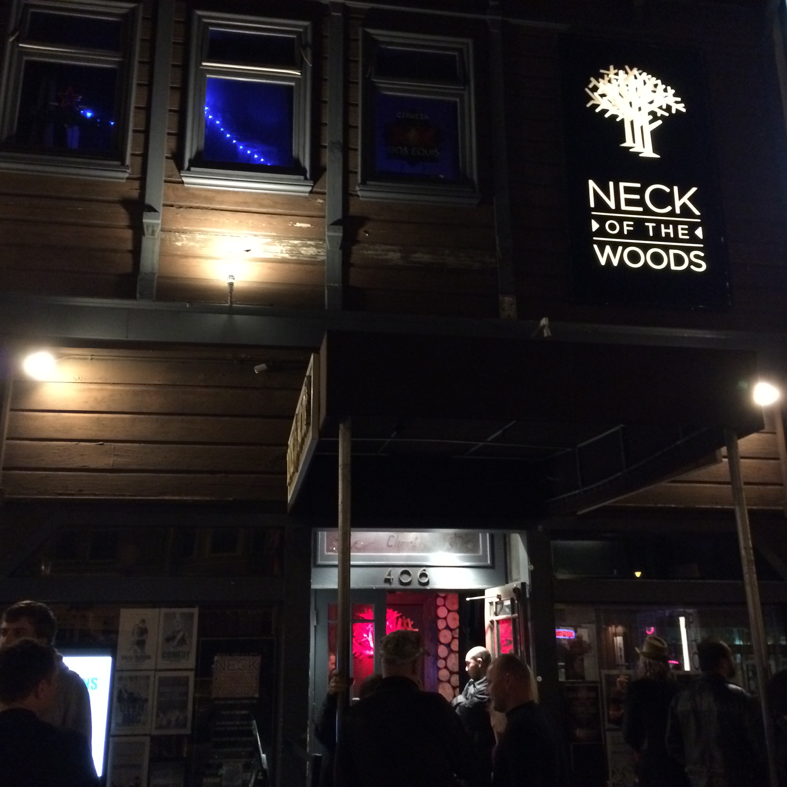
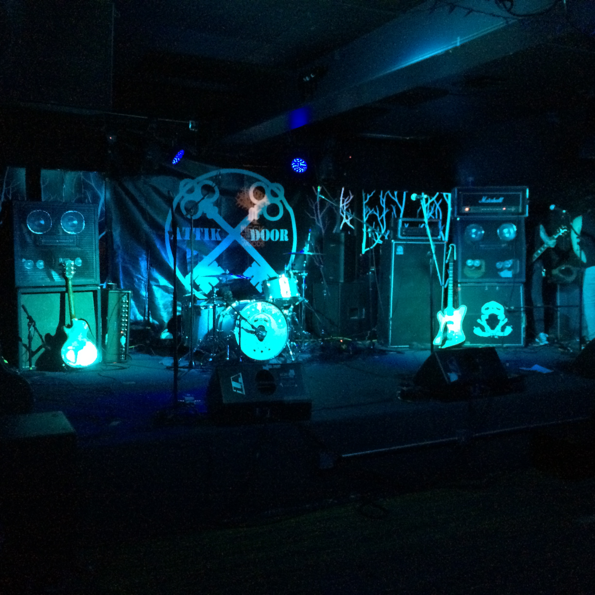
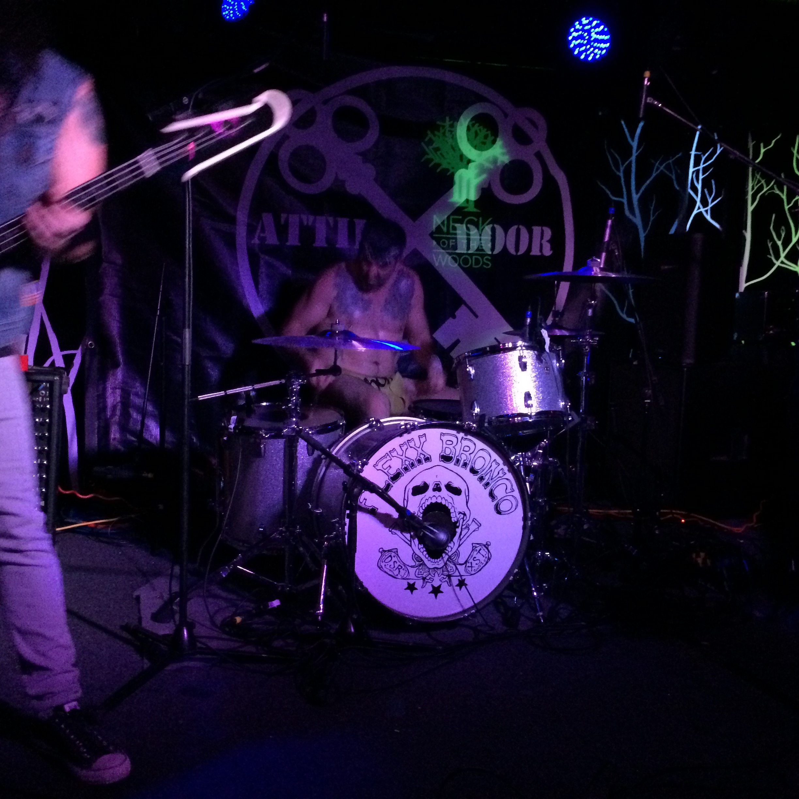
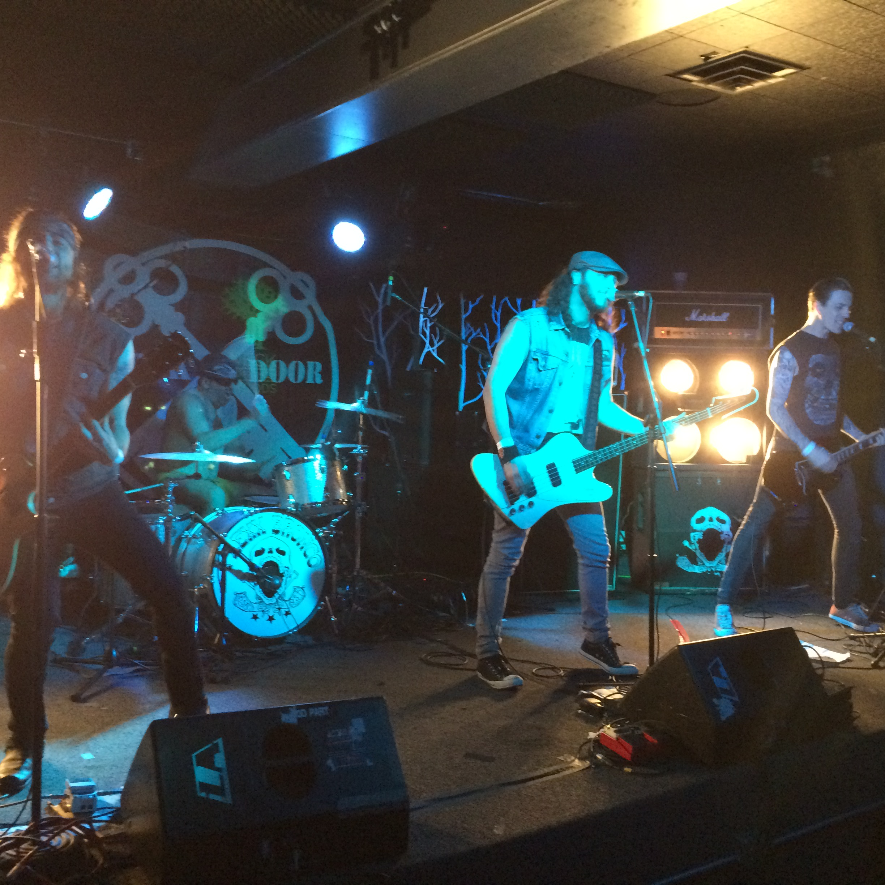
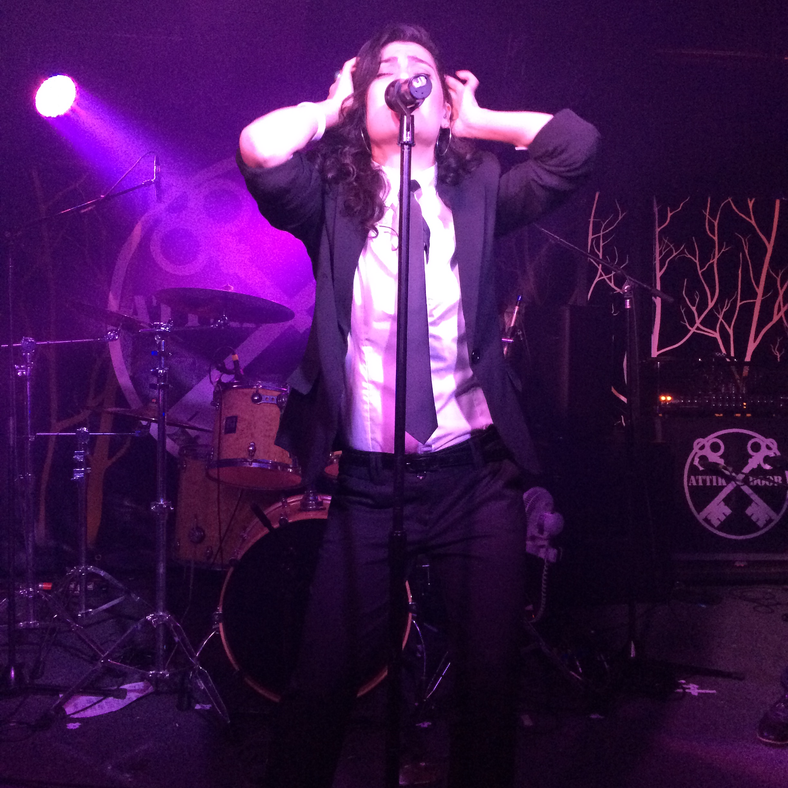
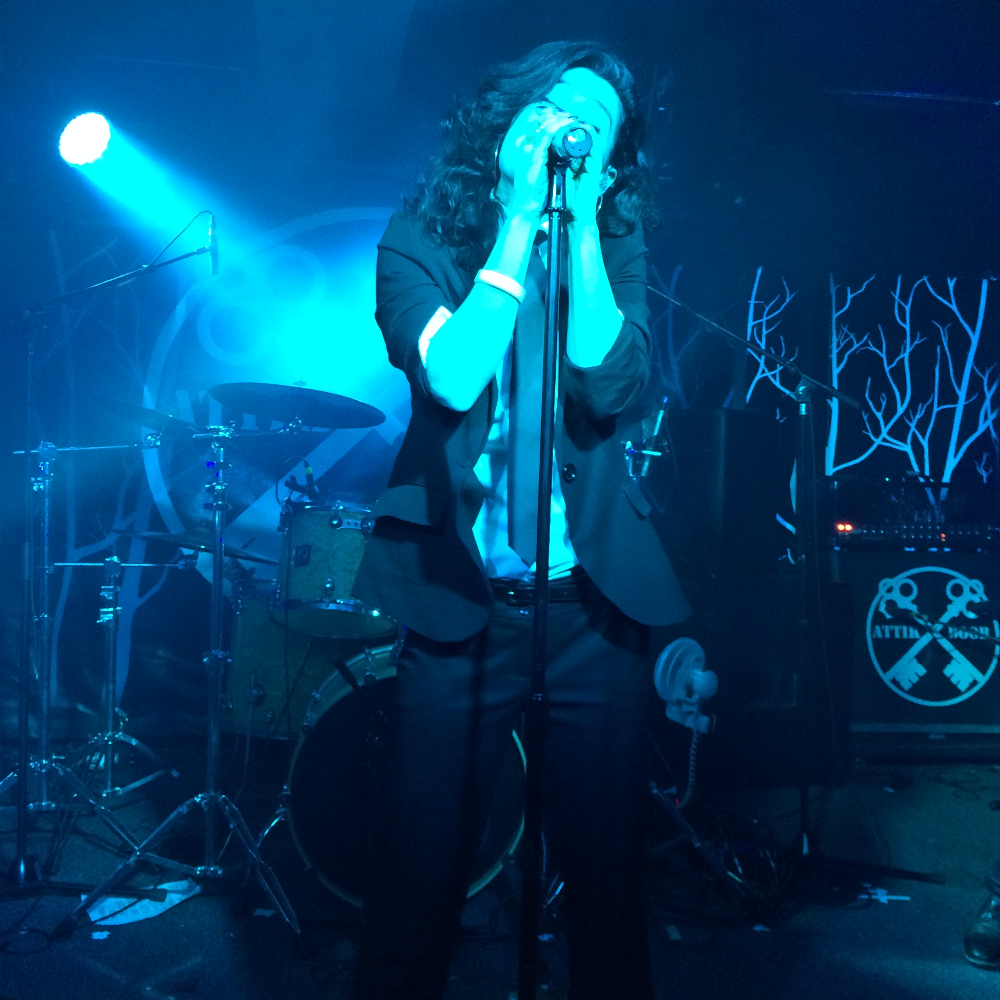

NECK OF THE WOODS
 -«Через двести метров поверните на право на Bay Bridge» - подсказывает мне навигатор женским голосом с именем Ира. Почему именно Ира? Не знаю. Сорок пять миль, значит где-то через час будем дома, дороги всегда пусты в это пред утреннее время суток. Наша маленькая тойота кажется мне корабликом летящим по волнам залива, мирное покачивание подвески и ни с чем непередаваемое ощущение лёгкости и радости от заканчивающегося вечера.
Опускаю окно, от перепадов покрытия дороги в машине становится то громче, то тише. Но это хорошо, это значит что я слышу и мои уши заложило не окончательно.
Сегодня совершенно случайным образом и не поддавшись сну который настойчиво предлагал ехать домой, мы были в заведении под названием NECK OF THE WOODS о чём я и поведаю ниже.
У самого бара нам припарковаться не удалось, всё было занято, оставили машину в паре кварталов. Сам район являет собой какую-то смесь спальных таунхаусов и азиатско-американско-мексиканских ресторанчиков и баров.
На углу, недалеко от бара, в 11 часов ночи, мы наткнулись на работающий книжный магазин с прилавком прямо вынесенным на улицу. Очень атмосферное место, много старых книг, много уценок, и наверное с десяток посетителей, и всего один продавец. Не знаю как ему удаётся следить за всем, но место популярно. Удивляет время работы, но возможно так задумано. Бродил среди полок которые уходили под самый потолок наверное минут пятнадцать, потом ребята вытащили, цель нашего вечера была совсем другая.
Еще минут 10 и мы на месте. Перед баром несколько компаний, курят, смеются. Всё как обычно. За исключением парня сидящего слева от входа. В длиннющем доходящем наверное ему до колен белом свитере и дымящем травой. Помимо свитера конечно были и штаны, но свитер в плюс двадцать!?. Удивились. Глаза красные как у кролика, интересно сколько дней он не спал.
На входе показываю права, до двадцати одного нельзя. Заходим внутрь. Небольшая стойка за которой смуглый мексиканец играющий роль администратора-охранника продаёт билеты. Десять долларов первый этаж и пятнадцать второй. Минута принятия решения. - «Где веселее?» - спрашиваю я. Показывает пальцем на второй этаж. Украдкой заглядываю что творится на первом. Прямоугольное помещение, слева бар, метрах в десяти сцена с которой меня достигают звуки кантри. Решение принято, расстаёмся с шестидесятью долларами за четверых и идём на второй. Мексиканец долго считает в уме сколько мы должны дать ему денег, подсказываем ему. Улыбается, ставит нам печатки и мы поднимаемся на второй этаж. Ступеньки приводят прямо к бару за которым работают два бармена, девушка и парень. Парня зовут Хосе, душа компании, хохочет, жонглирует бутылками и делает ядрёные коктейли. Всё это нам рассказали позже. Справа небольшие места где можно посидеть и пообщаться с видом на улицу. Слева от лестницы основное пространство и сцена. С первых мгновений ощущаешь колорит заведения. Пластиковые стаканчики, липкий от расплескивающегося пива пол. И невероятно разного содержания публика. Вот мимо меня проходит парень в галстуке и приталенном пиджаке, а немного справа стоит сурового вида рокер в кожухе на голое тело, кожаных штанах и волосами ниже бёдер. Прямо слева стоят и целуются по всей видимости две лесби, страстно целуются. Одна в вечернем платье, другая с выбритыми висками, вся в чёрном, штаны и футболка, из последней показываются красиво нарисованные татухи, с тематикой черепов и всего соответствующего. Впереди вижу девушку в белой вышиванке. Шарик точно круглый. Наверное в голове начинает всплывать слово, ммм, "гадюшник". Но это не так, помимо всего описанного выше, ощущается неповторимое пространство заведения. И кажется что каждый элемент играет свою важную роль в создании этого пространства, как и мы, впервые заглянувшие сюда. Погружаемся глубже. Иду к туалету умыться, он немного слева от сцены, мужской и женский, отдельно. Захожу внутрь. Именно так и никак иначе, ещё одна важная деталь. Полностью исписанные стены, снизу до верху, даже потолок. Наклейка на наклейке, названия групп чередуются с не совсем пристойными надписями. В голове приходит мысль, что именно в таких местах в американских фильмах злодеи разбивают голову несчастной жертвы об умывальник, а затем кидают в одиноко стоящую кабинку и продолжают свою беспощадную расправу. Желтый флакончик жидкого мыла рядом с умывальником и висящие бумажные полотенца никак не вписываются. Надо бы убрать.
На сцене уже начинается подготовка к первому выступлению группы. 
Три гитариста из которых один вокалист. Татухи от запястей до плечей, черепа, кресты. Кеды кронверки, старые потёртые джинсы с безрукавками. Шестой IPhone плюс в розовом чехле виднеется из заднего кармана солиста когда он поворачивается настроить гитару. Настоящие рокеры, образы рисуют бесконечные пьнства, женщин и наркотики. Муза приходящая под утра и бесконечные репетиции с часами записей в студии. Но это всё моё воображение, но образ яркий, пока что оставим так. Про барабанщика стоит сказать отдельно и думаю что слов не хватит. Помните фильмы про якудзу? Сцены когда члены опасной япоской мафии заходят в баню с нарисованными во всю спину драконами? Именно так и вышел на сцену барабанщик. В полотенце и просто с невероятной татухой дракона на всю спину. Только было он не японец. Ближе к европейцу. Кольца в ушах, с седыми весками и бонданой на лбу. На груди слева и справа еще две татухи. Перед барабанами достаёт палочки, снимает полотенце и остаётся в минимальных размерах набердренной желтой повязке сделанной наверное из кожи. У меня есть предположение почему так.  Я не помню ни названия группы, ни о чём они играли и слова было сложно разобрать. Понял и помню только что солист пел про мертвеца и местами спрашивал нас: - «Are you fucking alive?!»  И я вам скажу что в голове был лишь один ответ, - «Да, я fucking alive и ещё как!». Это было просто невероятно. Они все четвером получали такой кайф от своей игры что это просто невозможно было не почувствовать. Можно было смотреть просто на барабанщика. Настолько яркий пример того что когда человеку просто стосит голову от музыки, от того что он делает, его настроение передавалось со скоростью света. Не смотреть как он играет на барабанх было просто не возможно. Он их бил, он их поглаживал. Было ощущение что он их просто тра**ет. Я не знал что это можно делать с барабанами, но поверьте, можно и ещё как. Группа отыграла порядка часа за которые казалось что я просто улетел в этом новом для меня пространстве.
Небольшой перерыв и подготовка сцены для второй группы. Как оказалось в тот день была премьера первого альбома группы Attik door. Неделей позже я познакомился с гитаристом Лёхой и солисткой Лианой. Вся группа состоит из русско говорящих ребят, давно перехавшие в штаты. Да и сам бар оказался негласным местом встречи русскоговорящей тусовки в этом районе, а может и в городе.
Невероятный голос Лианы, потрясающая сыгранность и талант группы, атмосфера заведения, состояние зрителей и второй концерт просто взрывает это место. Даже нету слов описать состояние.  
Классный альбом, классные ребята, классный бар. Слова неожиданно заканчиваются.
Около двух после концерта выхожу уставший и счастливый.
В очередной раз прихожу к мысли, что каждый сам ответственен за свои кайфушки. Так что будьте ответственны и кайфуйте чаще!
P.S На последок мой любимый трек Attik Door, наслаждайтесь! Attik Door - Time
P.S Будете в этих местах, обязательно загляните в Neck of the Woods. Не пожалеете точно.